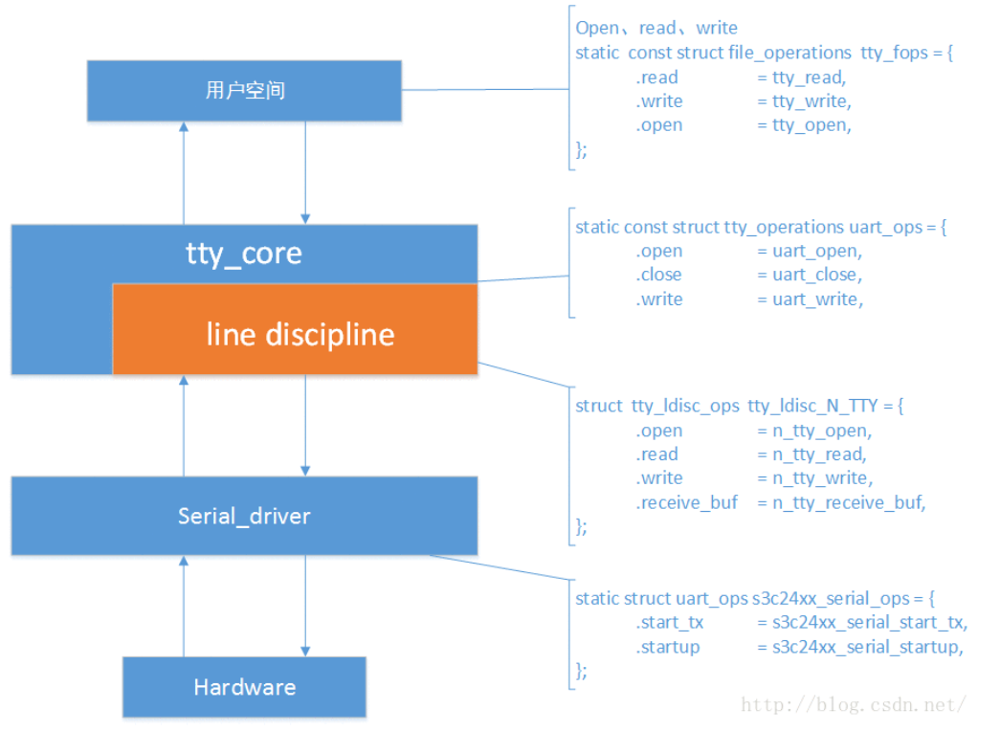

在Linux下，串口驱动实现在tty子系统下，类似input子系统，tty子系统也有它严格的分层，每层实现不同的功能。 Linux tty子系统包含：tty核心，tty线路规程和tty驱动。tty核心是对整个tty设备的抽象，对用户提供统一的接口，tty线路规程是对传输数据的格式化，tty驱动则是面向tty设备的硬件驱动。

代码分析：linux-3.0/drivers/tty/serial/samsung.c
static struct uart_driver s3c24xx_uart_drv = {
.owner = THIS_MODULE,
.driver_name = "s3c2410_serial",
.nr = CONFIG_SERIAL_SAMSUNG_UARTS,
.cons = S3C24XX_SERIAL_CONSOLE,
.dev_name = S3C24XX_SERIAL_NAME,
.major = S3C24XX_SERIAL_MAJOR,
.minor = S3C24XX_SERIAL_MINOR,
};
static int __init s3c24xx_serial_modinit(void)
{
int ret;
ret = uart_register_driver(&s3c24xx_uart_drv);
if (ret < 0) {
printk(KERN_ERR "failed to register UART driver\n");
return -1;
}
return 0;
}
注册一个uart_driver类型的结构。
linux-3.0/include/linux/serial_core.h
struct uart_driver {
struct module *owner;/* 拥有该uart_driver的模块,一般为THIS_MODULE */
const char *driver_name;/* 串口驱动名，串口设备文件名以驱动名为基础 */
const char *dev_name;/* 串口设备名 */
int major;/* 主设备号 */
int minor;/*次设备号*/
int nr;/* 该uart_driver支持的串口个数(最大) */
struct console *cons;
/*
* these are private; the low level driver should not
* touch these; they should be initialised to NULL
*//* 下面这俩，它们应该被初始化为NULL */
struct uart_state *state;/* 下层，串口驱动层 */
struct tty_driver *tty_driver;/* tty相关 */
};
linux-3.0/include/linux/tty_driver.h
struct tty_driver {
int magic; /* magic number for this structure */
struct kref kref; /* Reference management */
struct cdev cdev;
struct module *owner;
const char *driver_name;
const char *name;
int name_base; /* offset of printed name */
int major; /* major device number */
int minor_start; /* start of minor device number */
int minor_num; /* number of *possible* devices */
int num; /* number of devices allocated */
short type; /* type of tty driver */
short subtype; /* subtype of tty driver */
struct ktermios init_termios; /* Initial termios */
int flags; /* tty driver flags */
struct proc_dir_entry *proc_entry; /* /proc fs entry */
struct tty_driver *other; /* only used for the PTY driver */
/*
* Pointer to the tty data structures
*/
struct tty_struct **ttys;
struct ktermios **termios;
struct ktermios **termios_locked;
void *driver_state;
/*
* Driver methods
*/
const struct tty_operations *ops;
struct list_head tty_drivers;
};
再来看看注册函数：
int uart_register_driver(struct uart_driver *drv)
{
struct tty_driver *normal;
int i, retval;
BUG_ON(drv->state);
/*
* Maybe we should be using a slab cache for this, especially if
* we have a large number of ports to handle.
*/
drv->state = kzalloc(sizeof(struct uart_state) * drv->nr, GFP_KERNEL);/*nr为支持的最大串口数量，为每个串口分配一个uart_state结构*/
if (!drv->state)
goto out;
normal = alloc_tty_driver(drv->nr);/*分配一个tty_driver类型结构体，设置其magic域和num域为nr即设备数量*/
if (!normal)
goto out_kfree;
drv->tty_driver = normal;/*将tty的tty_driver域指向normal*/
/*都是在对drv的tty_driver域进行设置*/
normal->owner = drv->owner;/*驱动模块的拥有者，通常为THIS_MODULE*/
normal->driver_name = drv->driver_name;
normal->name = drv->dev_name;
normal->major = drv->major;/*主设备号*/
normal->minor_start = drv->minor;/*次设备号起始点*/
normal->type = TTY_DRIVER_TYPE_SERIAL;/*设置tty驱动类型，如pty，串口等，这里为serial串口*/
normal->subtype = SERIAL_TYPE_NORMAL;
normal->init_termios = tty_std_termios;
normal->init_termios.c_cflag = B9600 | CS8 | CREAD | HUPCL | CLOCAL;
normal->init_termios.c_ispeed = normal->init_termios.c_ospeed = 9600;
normal->flags = TTY_DRIVER_REAL_RAW | TTY_DRIVER_DYNAMIC_DEV;
normal->driver_state = drv;
tty_set_operations(normal, &uart_ops);/*设置normal的ops域为uart_ops,这个地方会重点分析*/
/*
* Initialise the UART state(s).
*/
/*初始化每一个串口设备的port成员，设置相应参数*/
for (i = 0; i < drv->nr; i++) {
struct uart_state *state = drv->state + i;
struct tty_port *port = &state->port;
tty_port_init(port);/*初始化等待队列*/
port->ops = &uart_port_ops;/*设置每一个prot的ops域*/
static const struct tty_port_operations uart_port_ops = {
.carrier_raised = uart_carrier_raised,
.dtr_rts = uart_dtr_rts,
};
port->close_delay = 500; /* .5 seconds */
port->closing_wait = 30000; /* 30 seconds */
tasklet_init(&state->tlet, uart_tasklet_action,
(unsigned long)state);/*tasklet用于中断的下半部，中断发生后，会调用action函数*/
}
retval = tty_register_driver(normal);/*注册normal结构体到内核*/
if (retval >= 0)
return retval;
put_tty_driver(normal);/*注册失败调用*/
out_kfree:
kfree(drv->state);
out:
return -ENOMEM;
}
下面分析tty_register_driver函数：
int tty_register_driver(struct tty_driver *driver)
int i;
dev_t dev;
void **p = NULL;
struct device *d;
if (!(driver->flags & TTY_DRIVER_DEVPTS_MEM) && driver->num)
{
p = kzalloc(driver->num * 2 * sizeof(void *), GFP_KERNEL);
if (!p)
return -ENOMEM;
}
if (!driver->major) {
error = alloc_chrdev_region(&dev, driver->minor_start,
driver->num, driver->name);/*动态申请主次设备号*/
if (!error) {
driver->major = MAJOR(dev);
driver->minor_start = MINOR(dev);
}
} else {
dev = MKDEV(driver->major, driver->minor_start);/*静态申请主次设备号*/
}
if (error < 0) {
kfree(p);
return error;
}
if (p) {
driver->ttys = (struct tty_struct **)p;
driver->termios = (struct ktermios **)(p + driver->num);
} else {
driver->ttys = NULL;
driver->termios = NULL;
}
cdev_init(&driver->cdev, &tty_fops);/*绑定cdev和fops*/
driver->cdev.owner = driver->owner;
error = cdev_add(&driver->cdev, dev, driver->num);/*注册cdev到内核*/
if (error) {
unregister_chrdev_region(dev, driver->num);
driver->ttys = NULL;
driver->termios = NULL;
kfree(p);
return error;
}
mutex_lock(&tty_mutex);
list_add(&driver->tty_drivers, &tty_drivers);/*将tty_driver加入到链表*/
mutex_unlock(&tty_mutex);
if (!(driver->flags & TTY_DRIVER_DYNAMIC_DEV)) {
for (i = 0; i < driver->num; i++) {
d = tty_register_device(driver, i, NULL);/*创建设备节点，由于flags域的设置，这个if语句不会执行*/
if (IS_ERR(d)) {
error = PTR_ERR(d);
goto err;
}
}
}
proc_tty_register_driver(driver);
driver->flags |= TTY_DRIVER_INSTALLED;
return 0;
err:
for (i--; i >= 0; i--)
tty_unregister_device(driver, i);
mutex_lock(&tty_mutex);
list_del(&driver->tty_drivers);
mutex_unlock(&tty_mutex);
unregister_chrdev_region(dev, driver->num);
driver->ttys = NULL;
driver->termios = NULL;
kfree(p);
return error;
}
tty_register_device
struct device *tty_register_device(struct tty_driver *driver, unsigned index,
struct device *device)
{
char name[64];
dev_t dev = MKDEV(driver->major, driver->minor_start) + index;/*静态创建次设备号*/
if (index >= driver->num) {
printk(KERN_ERR "Attempt to register invalid tty line number "
" (%d).\n", index);
return ERR_PTR(-EINVAL);
}
if (driver->type == TTY_DRIVER_TYPE_PTY)
pty_line_name(driver, index, name);
else
tty_line_name(driver, index, name);/*通过type域判断创建tty还是pty类型设备节点*/
return device_create(tty_class, device, dev, NULL, name);/*动态创建设备节点*/
}
pro_tty_register_driver
void proc_tty_register_driver(struct tty_driver *driver)
{
struct proc_dir_entry *ent;
if (!driver->driver_name || driver->proc_entry ||
!driver->ops->proc_fops)
return;
ent = proc_create_data(driver->driver_name, 0, proc_tty_driver,
driver->ops->proc_fops, driver);/*在proc文件系统下创建相应文件*/
driver->proc_entry = ent;
}
到这里，都是核心层的实现，fops我们后面再聊，现在看看底层的实现：
/linux-3.0/drivers/tty/serial/s3c2440.c
static int __init s3c2440_serial_init(void)
{
return s3c24xx_serial_init(&s3c2440_serial_driver, &s3c2440_uart_inf);
}
static struct platform_driver s3c2440_serial_driver = {
.probe = s3c2440_serial_probe,
.remove = __devexit_p(s3c24xx_serial_remove),
.driver = {
.name = "s3c2440-uart",
.owner = THIS_MODULE,
},
};
static struct s3c24xx_uart_info s3c2440_uart_inf = {
.name = "Samsung S3C2440 UART",
.type = PORT_S3C2440,
.fifosize = 64,
.rx_fifomask = S3C2440_UFSTAT_RXMASK,
.rx_fifoshift = S3C2440_UFSTAT_RXSHIFT,
.rx_fifofull = S3C2440_UFSTAT_RXFULL,
.tx_fifofull = S3C2440_UFSTAT_TXFULL,
.tx_fifomask = S3C2440_UFSTAT_TXMASK,
.tx_fifoshift = S3C2440_UFSTAT_TXSHIFT,
.get_clksrc = s3c2440_serial_getsource,
.set_clksrc = s3c2440_serial_setsource,
.reset_port = s3c2440_serial_resetport,
};
看到了platform_driver，我们再看看s3c24xx_serial_init这个函数：
int s3c24xx_serial_init(struct platform_driver *drv,
struct s3c24xx_uart_info *info)
{
dbg("s3c24xx_serial_init(%p,%p)\n", drv, info);
#ifdef CONFIG_PM
drv->suspend = s3c24xx_serial_suspend;
drv->resume = s3c24xx_serial_resume;
#endif
return platform_driver_register(drv);
}
主要就是注册平台驱动，驱动结构体就是s3c2440_serial_driver。
这里没有能继续向下深入的，既然知道了是platform总线的注册，一定还有平台设备的注册，设备和驱动匹配会调用平台驱动的probe函数，我们从probe函数开始：
static int s3c2440_serial_probe(struct platform_device *dev)
{
dbg("s3c2440_serial_probe: dev=%p\n", dev);
return s3c24xx_serial_probe(dev, &s3c2440_uart_inf);
}
int s3c24xx_serial_probe(struct platform_device *dev,
struct s3c24xx_uart_info *info)
{
struct s3c24xx_uart_port *ourport;
int ret;
dbg("s3c24xx_serial_probe(%p, %p) %d\n", dev, info, probe_index);
ourport = &s3c24xx_serial_ports[probe_index];
probe_index++;
dbg("%s: initialising port %p...\n", __func__, ourport);
ret = s3c24xx_serial_init_port(ourport, info, dev);
if (ret < 0)
goto probe_err;
dbg("%s: adding port\n", __func__);
uart_add_one_port(&s3c24xx_uart_drv, &ourport->port);
platform_set_drvdata(dev, &ourport->port);
ret = device_create_file(&dev->dev, &dev_attr_clock_source);
if (ret < 0)
printk(KERN_ERR "%s: failed to add clksrc attr.\n", __func__);
ret = s3c24xx_serial_cpufreq_register(ourport);
if (ret < 0)
dev_err(&dev->dev, "failed to add cpufreq notifier\n");
return 0;
probe_err:
return ret;
}
static struct s3c24xx_uart_port s3c24xx_serial_ports[CONFIG_SERIAL_SAMSUNG_UARTS] = {
[0] = {
.port = {
.lock = __SPIN_LOCK_UNLOCKED(s3c24xx_serial_ports[0].port.lock),
.iotype = UPIO_MEM,
.irq = IRQ_S3CUART_RX0,
.uartclk = 0,
.fifosize = 16,
.ops = &s3c24xx_serial_ops,
.flags = UPF_BOOT_AUTOCONF,
.line = 0,
}
},
[1] = {
.port = {
.lock = __SPIN_LOCK_UNLOCKED(s3c24xx_serial_ports[1].port.lock),
.iotype = UPIO_MEM,
.irq = IRQ_S3CUART_RX1,
.uartclk = 0,
.fifosize = 16,
.ops = &s3c24xx_serial_ops,
.flags = UPF_BOOT_AUTOCONF,
.line = 1,
}
},
#if CONFIG_SERIAL_SAMSUNG_UARTS > 2
[2] = {
.port = {
.lock = __SPIN_LOCK_UNLOCKED(s3c24xx_serial_ports[2].port.lock),
.iotype = UPIO_MEM,
.irq = IRQ_S3CUART_RX2,
.uartclk = 0,
.fifosize = 16,
.ops = &s3c24xx_serial_ops,
.flags = UPF_BOOT_AUTOCONF,
.line = 2,
}
},
#endif
#if CONFIG_SERIAL_SAMSUNG_UARTS > 3
[3] = {
.port = {
.lock = __SPIN_LOCK_UNLOCKED(s3c24xx_serial_ports[3].port.lock),
.iotype = UPIO_MEM,
.irq = IRQ_S3CUART_RX3,
.uartclk = 0,
.fifosize = 16,
.ops = &s3c24xx_serial_ops,
.flags = UPF_BOOT_AUTOCONF,
.line = 3,
}
}
#endif
};
struct s3c24xx_uart_port {
unsigned char rx_claimed;
unsigned char tx_claimed;
unsigned int pm_level;
unsigned long baudclk_rate;
unsigned int rx_irq;
unsigned int tx_irq;
struct s3c24xx_uart_info *info;
struct s3c24xx_uart_clksrc *clksrc;
struct clk *clk;
struct clk *baudclk;
struct uart_port port;
#ifdef CONFIG_CPU_FREQ
struct notifier_block freq_transition;
#endif
};
struct uart_port {
spinlock_t lock; /* port lock */
unsigned long iobase; /* io端口基地址（物理） */
unsigned char __iomem *membase; /* io内存基地址（虚拟） */
unsigned int (*serial_in)(struct uart_port *, int);
void (*serial_out)(struct uart_port *, int, int);
unsigned int irq; /* 中断号 */
unsigned long irqflags; /* 中断标志 */
unsigned int uartclk; /* 串口时钟 */
unsigned int fifosize; /* 串口缓冲区大小 */
unsigned char x_char; /* xon/xoff char */
unsigned char regshift; /* 寄存器位移 */
unsigned char iotype; /* IO访问方式 */
unsigned char unused1;
unsigned int read_status_mask; /* 关心 Rx error status */
unsigned int ignore_status_mask; /* 忽略 Rx error status */
struct uart_state *state; /* pointer to parent state */
struct uart_icount icount; /* 串口信息计数器 */
struct console *cons; /* struct console, if any */
#if defined(CONFIG_SERIAL_CORE_CONSOLE) || defined(SUPPORT_SYSRQ)
unsigned long sysrq; /* sysrq timeout */
#endif
upf_t flags;
unsigned int mctrl; /* 当前的Moden 设置 */
unsigned int timeout; /* character-based timeout */
unsigned int type; /* 端口类型 */
const struct uart_ops *ops; /* 串口端口操作函数 */
unsigned int custom_divisor;
unsigned int line; /* 端口索引 */
resource_size_t mapbase; /* io内存物理基地址 */
struct device *dev; /* 父设备 */
unsigned char hub6; /* this should be in the 8250 driver */
unsigned char suspended;
unsigned char unused[2];
void *private_data; /* generic platform data pointer */
};
结构体uart_port是一个通用结构体，他是我们自己填充的一个结构体，在s3c2440中，填充如上，而s3c2440还会有其他的信息需要添加，就使用了一个s3c特征结构体来包含uart_port以及自己的特殊信息。
看到函数 s3c24xx_serial_init_port
static int s3c24xx_serial_init_port(struct s3c24xx_uart_port *ourport,
struct s3c24xx_uart_info *info, struct platform_device *platdev)
{
struct uart_port *port = &ourport->port;
struct s3c2410_uartcfg *cfg;
struct resource *res;
int ret;
dbg("s3c24xx_serial_init_port: port=%p, platdev=%p\n", port, platdev);
if (platdev == NULL)
return -ENODEV;
cfg = s3c24xx_dev_to_cfg(&platdev->dev);
if (port->mapbase != 0)
return 0;
if (cfg->hwport > CONFIG_SERIAL_SAMSUNG_UARTS) {
printk(KERN_ERR "%s: port %d bigger than %d\n", __func__,
cfg->hwport, CONFIG_SERIAL_SAMSUNG_UARTS);
return -ERANGE;
}
/* setup info for port */
port->dev = &platdev->dev;
ourport->info = info;
/* copy the info in from provided structure */
ourport->port.fifosize = info->fifosize;
dbg("s3c24xx_serial_init_port: %p (hw %d)...\n", port, cfg->hwport);
port->uartclk = 1;
if (cfg->uart_flags & UPF_CONS_FLOW) {
dbg("s3c24xx_serial_init_port: enabling flow control\n");
port->flags |= UPF_CONS_FLOW;
}
/* sort our the physical and virtual addresses for each UART */
res = platform_get_resource(platdev, IORESOURCE_MEM, 0);
if (res == NULL) {
printk(KERN_ERR "failed to find memory resource for uart\n");
return -EINVAL;
}
dbg("resource %p (%lx..%lx)\n", res, res->start, res->end);
port->mapbase = res->start;
port->membase = S3C_VA_UART + (res->start & 0xfffff);
ret = platform_get_irq(platdev, 0);
if (ret < 0)
port->irq = 0;
else {
port->irq = ret;
ourport->rx_irq = ret;
ourport->tx_irq = ret + 1;
}
ret = platform_get_irq(platdev, 1);
if (ret > 0)
ourport->tx_irq = ret;
ourport->clk = clk_get(&platdev->dev, "uart");
dbg("port: map=%08x, mem=%08x, irq=%d (%d,%d), clock=%ld\n",
port->mapbase, port->membase, port->irq,
ourport->rx_irq, ourport->tx_irq, port->uartclk);
/* reset the fifos (and setup the uart) */
s3c24xx_serial_resetport(port, cfg);
return 0;
}
函数很复杂，大概就是做一些硬件的初始化。在这里，port中的某些硬件信息由platform_device提供。
紧接着是函数uart_add_one_port
int uart_add_one_port(struct uart_driver *drv, struct uart_port *uport)
{
struct uart_state *state;
struct tty_port *port;
int ret = 0;
struct device *tty_dev;
BUG_ON(in_interrupt());
if (uport->line >= drv->nr)
return -EINVAL;
state = drv->state + uport->line;
port = &state->port;
mutex_lock(&port_mutex);
mutex_lock(&port->mutex);
if (state->uart_port) {
ret = -EINVAL;
goto out;
}
state->uart_port = uport;
state->pm_state = -1;
uport->cons = drv->cons;
uport->state = state;
/*
* If this port is a console, then the spinlock is already
* initialised.
*/
if (!(uart_console(uport) && (uport->cons->flags & CON_ENABLED))) {
spin_lock_init(&uport->lock);
lockdep_set_class(&uport->lock, &port_lock_key);
}
uart_configure_port(drv, state, uport);
/*
* Register the port whether it's detected or not. This allows
* setserial to be used to alter this ports parameters.
*/
tty_dev = tty_register_device(drv->tty_driver, uport->line, uport->dev);
if (likely(!IS_ERR(tty_dev))) {
device_init_wakeup(tty_dev, 1);
device_set_wakeup_enable(tty_dev, 0);
} else
printk(KERN_ERR "Cannot register tty device on line %d\n",
uport->line);
/*
* Ensure UPF_DEAD is not set.
*/
uport->flags &= ~UPF_DEAD;
out:
mutex_unlock(&port->mutex);
mutex_unlock(&port_mutex);
return ret;
}
struct uart_state {
struct tty_port port;
int pm_state;
struct circ_buf xmit;
struct tasklet_struct tlet;
struct uart_port *uart_port;
};
主要完成tty_register_device设备节点的创建。
现在停下来总结一下，在tty子系统串口注册这里，涉及到多个fops的file_operation类型结构体，这些结构我们待会会重点分析。重点了解samsung.c这个文件：
调用uart_register_driver（定义在serial_core.c中）注册一个uart_driver类型结构体。函数uart_register_driver函数会注册tty_driver类型结构normal并设置其ops域为uart_ops，调用tty_register_driver（定义在tty_io.c中）函数注册normal结构体，此函数会申请注册设备号，并开辟tty_driver结构的ttys和termios域，最后注册cdev并绑定fops到内核，加入链表，在proc下创建对应文件。
由于cdev的注册，我们可以开始分析绑定cdev的结构fops，从open函数开始（定义在tty_io.c中）：
static const struct file_operations tty_fops = {
.llseek = no_llseek,
.read = tty_read,
.write = tty_write,
.poll = tty_poll,
.unlocked_ioctl = tty_ioctl,
.compat_ioctl = tty_compat_ioctl,
.open = tty_open,
.release = tty_release,
.fasync = tty_fasync,
};
static int tty_open(struct inode *inode, struct file *filp)
{
struct tty_struct *tty = NULL;
int noctty, retval;
struct tty_driver *driver;
int index;
dev_t device = inode->i_rdev;
.....
driver = get_tty_driver(device, &index);/*在tty_driver链表中通过设备号找到对应tty_driver
.....
/* check whether we're reopening an existing tty */
tty = tty_driver_lookup_tty(driver, inode, index);/*如果tty_driver的ops域定义了lookup函数，就调用，反之返回tty_driver的ttys[index]*/
.....
tty = tty_init_dev(driver, index, 0);
......
if (tty->ops->open)
retval = tty->ops->open(tty, filp);/*调用tty的ops域的open函数--uart_open()*/
......
}
struct tty_struct *tty_init_dev(struct tty_driver *driver, int idx,
int first_ok)
{
struct tty_struct *tty;
int retval;
tty = alloc_tty_struct();为tty分配空间
......
initialize_tty_struct(tty, driver, idx);
初始化tty成员，初始化ldise成员N_TTY,初始化等待队列，工作队列ops域为tty_driver的ops域，index域位位tty_driver的index域等*/
......
retval = tty_ldisc_setup(tty, tty->link);/*调用n_tty_open函数进行一些设置*/
......
}
void initialize_tty_struct(struct tty_struct *tty,
struct tty_driver *driver, int idx)
{
memset(tty, 0, sizeof(struct tty_struct));
tty_ldisc_init(tty);
tty_buffer_init(tty);
......
init_waitqueue_head(&tty->write_wait);
init_waitqueue_head(&tty->read_wait);
INIT_WORK(&tty->hangup_work, do_tty_hangup);
......
tty->driver = driver;
tty->ops = driver->ops;
tty->index = idx;
tty_line_name(driver, idx, tty->name);
tty->dev = tty_get_device(tty);
}
void tty_ldisc_init(struct tty_struct *tty)
{
struct tty_ldisc *ld = tty_ldisc_get(N_TTY);
if (IS_ERR(ld))
panic("n_tty: init_tty");
tty_ldisc_assign(tty, ld);
}
void tty_buffer_init(struct tty_struct *tty)
{
spin_lock_init(&tty->buf.lock);
tty->buf.head = NULL;
tty->buf.tail = NULL;
tty->buf.free = NULL;
tty->buf.memory_used = 0;
INIT_WORK(&tty->buf.work, flush_to_ldisc);
}
int tty_ldisc_setup(struct tty_struct *tty, struct tty_struct *o_tty)
{
struct tty_ldisc *ld = tty->ldisc;
int retval;
retval = tty_ldisc_open(tty, ld);
if (o_tty) {
retval = tty_ldisc_open(o_tty, o_tty->ldisc);
......
return 0;
}
static int tty_ldisc_open(struct tty_struct *tty, struct tty_ldisc *ld)
{
WARN_ON(test_and_set_bit(TTY_LDISC_OPEN, &tty->flags));
if (ld->ops->open) {
int ret;
/* BTM here locks versus a hangup event */
WARN_ON(!tty_locked());
ret = ld->ops->open(tty);/*如果tty->ldisc->ops->open存在，就调用它，对于ntty来说是n_tty_open*/
if (ret)
clear_bit(TTY_LDISC_OPEN, &tty->flags);
return ret;
}
return 0;
}
函数tty_open：
通过inode获取到相应的tty_driver结构。
创建tty_struct类型结构tty,初始化tty的相应成员，线路规程tty->ldisc域为N_TTY对用函数n_tty_open...。初始化tty->buf域，初始化等待队列等，ops域为tty_driver的ops域，tty_driver域为tty_driver等。
tty->ops->open到tty_driver->ops->open->uart_open
static int uart_open(struct tty_struct *tty, struct file *filp)
{
struct uart_driver *drv = (struct uart_driver *)tty->driver->driver_state;/*获取到uart_driver结构*/
struct uart_state *state;
struct tty_port *port;
int retval, line = tty->index;
...
state = uart_get(drv, line);
...
port = &state->port;
...
tty->driver_data = state;
state->uart_port->state = state;
...
retval = uart_startup(tty, state, 0);
}
static struct uart_state *uart_get(struct uart_driver *drv, int line)
{
struct uart_state *state;
struct tty_port *port;
int ret = 0;
state = drv->state + line;
port = &state->port;
port->count++;
if (!state->uart_port || state->uart_port->flags & UPF_DEAD) {
ret = -ENXIO;
goto err_unlock;
}
return state;
}
获取到uart_driver结构，tty->driver_data->uart_port->state指向uart_driver的state域。
调用uart_startup函数。
static int uart_startup(struct tty_struct *tty, struct uart_state *state, int init_hw)
{
struct uart_port *uport = state->uart_port;
struct tty_port *port = &state->port;
unsigned long page;
int retval = 0;
...
retval = uport->ops->startup(uport);
...
return retval;
}
最终调用uart_state->uart_port->ops域的startup函数，前面的tty_open，uart_open，uart_startup都是内核提供固定执行函数，直到uart_port域的ops函数，对于不同的cpu这些函数实现是不同的，我们后面分析。
现在看到tty_write函数：
static ssize_t tty_write(struct file *file, const char __user *buf,
size_t count, loff_t *ppos)
{
struct inode *inode = file->f_path.dentry->d_inode;
struct tty_struct *tty = file_tty(file);
struct tty_ldisc *ld;
ssize_t ret;
...
ld = tty_ldisc_ref_wait(tty);/*获取tty的线路规程*/
if (!ld->ops->write)
ret = -EIO;
else
ret = do_tty_write(ld->ops->write, tty, file, buf, count);/*最终调用回调函数ld->ops->write*/
tty_ldisc_deref(ld);
return ret;
}
static inline ssize_t do_tty_write(
ssize_t (*write)(struct tty_struct *, struct file *, const unsigned char *, size_t),
struct tty_struct *tty,
struct file *file,
const char __user *buf,
size_t count)
{
ssize_t ret, written = 0;
unsigned int chunk;
...
buf_chunk = kmalloc(chunk, GFP_KERNEL);
...
tty->write_cnt = chunk;
tty->write_buf = buf_chunk;
}
/* Do the write .. */
for (;;) {
size_t size = count;
if (size > chunk)
size = chunk;
ret = -EFAULT;
if (copy_from_user(tty->write_buf, buf, size))/*从应用层获取数据*/
break;
ret = write(tty, file, tty->write_buf, size);/*调用ld->ops>write函数即n_tty_write函数*/
written += ret;
buf += ret;
count -= ret;
...
}
static ssize_t n_tty_write(struct tty_struct *tty, struct file *file,
const unsigned char *buf, size_t nr)
{
const unsigned char *b = buf;
DECLARE_WAITQUEUE(wait, current);
int c;
ssize_t retval = 0;
add_wait_queue(&tty->write_wait, &wait);
while (1) {
set_current_state(TASK_INTERRUPTIBLE);
if (signal_pending(current)) {
retval = -ERESTARTSYS;
break;
}
while (nr > 0) {
c = tty->ops->write(tty, b, nr);
...
}
调用tty->ops->write即uart_write函数；
static int uart_write(struct tty_struct *tty,
const unsigned char *buf, int count)
{
struct uart_state *state = tty->driver_data;
struct uart_port *port;
struct circ_buf *circ;
unsigned long flags;
int c, ret = 0;
...
uart_start(tty);
return ret;
}
static void uart_start(struct tty_struct *tty)
{
struct uart_state *state = tty->driver_data;
struct uart_port *port = state->uart_port;
...
__uart_start(tty);
spin_unlock_irqrestore(&port->lock, flags);
}
static void __uart_start(struct tty_struct *tty)
{
struct uart_state *state = tty->driver_data;
struct uart_port *port = state->uart_port;
if (!uart_circ_empty(&state->xmit) && state->xmit.buf &&
!tty->stopped && !tty->hw_stopped)
port->ops->start_tx(port);
}
调用tty_driver_data->uart_port->ops->start_tx函数。这个函数后面分析。